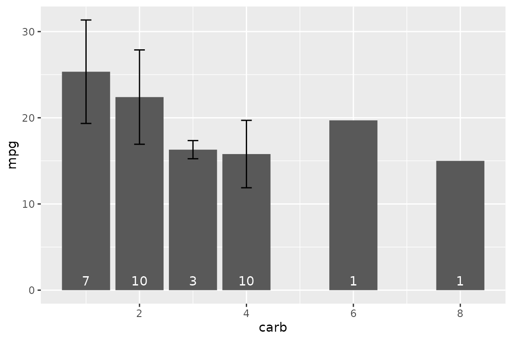
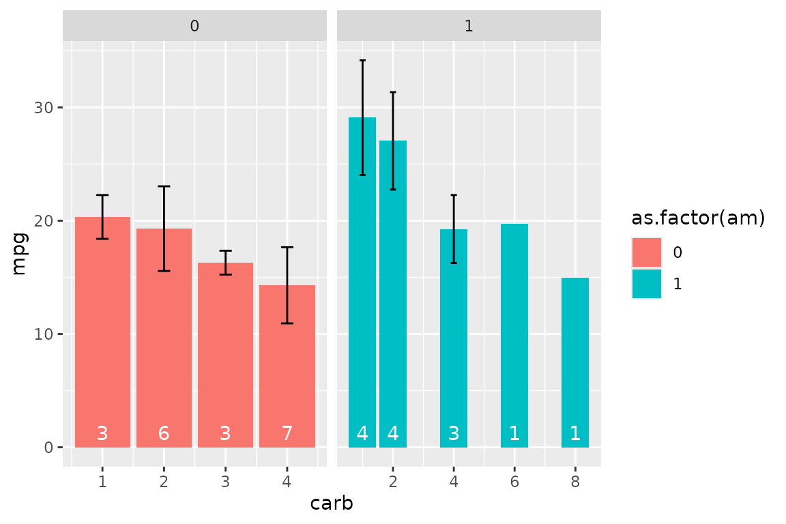
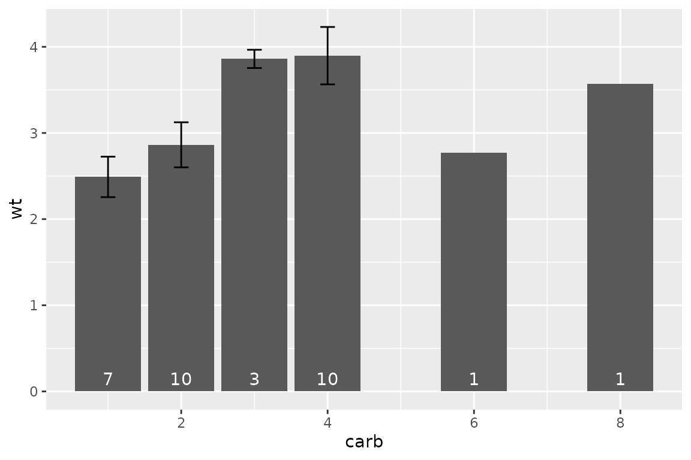
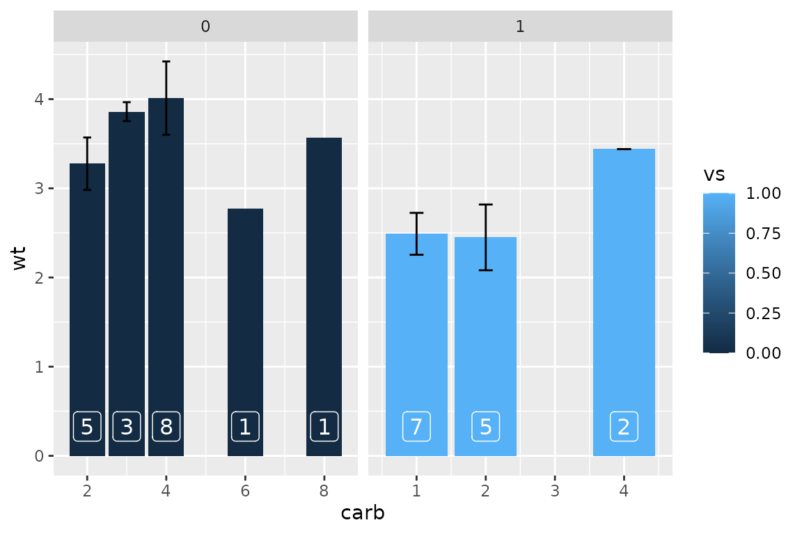
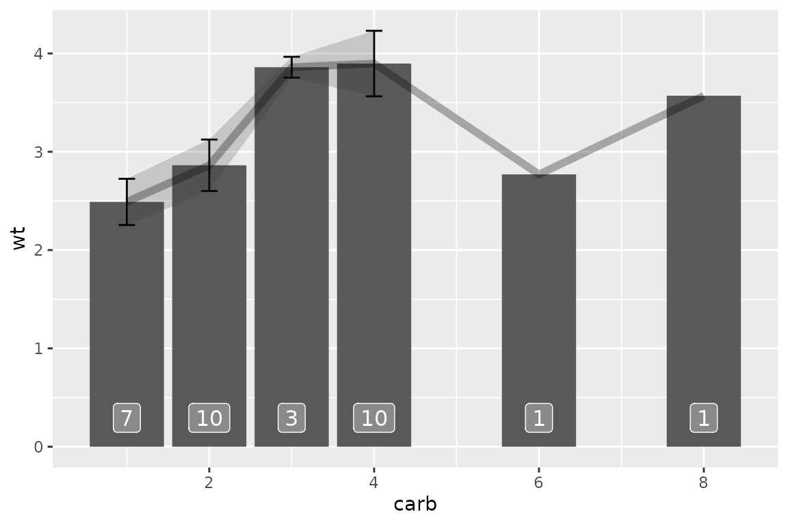
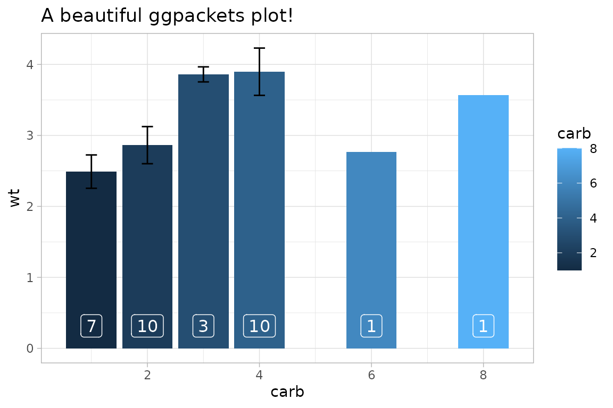

Getting Started with `ggpackets`
Doug Kelkhoff
2022-06-29 16:55:48
ggpackets.RmdOverview
ggpackets aims to make ggplot plots more modular by adding a framework for packing groups of ggplot layers that can be stored as a single variable or accessed from a function call. This means that you can now easily build out template plots which still interact nicely with the ggplot syntax. To illustrate this functionality, let’s start with a trivial example.
First, our trusted ggplot
To start, let’s take a look at what it might take to build a bar plot showing the mean value of some group with some errorbars to represent standard deviation and the counts in each bar labelled at the base of the bar. We’ll start by building this plot using standard ggplot.
ggplot(mtcars) +
aes(x = carb, y = mpg) +
geom_bar(stat= 'summary', aes(y = mpg),
fun.data = function(c) c(y = mean(c))) +
geom_errorbar(stat = 'summary', aes(y = mpg), width = 0.2,
fun.y = mean,
fun.min = ~mean(.) - sd(.),
fun.max = ~mean(.) + sd(.)) +
geom_text(stat = 'summary', vjust = -0.5, color = 'white',
fun.data = function(c) c(
label = length(c),
y = 0))
Wow! that plot got out of hand fast. And you can see that there’s a lot of repeated code. If we know that we want to use the exact same code repeatedly, we could wrap this in a function and make it a bit more reusable, but we’d sacrafice a lot of the customizability of building our plot from scratch for minor modifications in each instance. Alternatively, we could use ggpackets, which would provide further functionality to interoperate with other ggplot layers.
Packing Some Layers
In its most straightforward form, ggpackets allows for the packing of multiple layers together into a single variable. This variable contains a ggppacket object. This class handles addition with other ggpacket objects and ggproto objects to append them or their contents to an internal list of ggproto layers ( ggproto objects are the result of any of the geom_* or stat_* functions in ggplot2). When it’s combined with a ggplot call to build a plot (starting with the function ggplot()), the ggpacket will add its layers to the ggplot.
Enter ggpacket
my_ggpk_layers <- ggpacket() +
geom_bar(stat = 'summary',
fun.data = function(c) c(y = mean(c))) +
geom_errorbar(stat = 'summary', width = 0.2,
fun.data = function(c) c(
y = mean(c),
ymin = mean(c) - sd(c),
ymax = mean(c) + sd(c))) +
geom_text(stat = 'summary', vjust = -0.5,
color = 'white',
fun.data = function(c) c(label = length(c), y = 0))
ggplot(mtcars) +
aes(x = carb, y = mpg, fill = as.factor(am)) +
my_ggpk_layers() +
facet_grid(. ~ am, scales = 'free')
By breaking out only the layers of the plot, we still retain full control over the additional layers that might be needed and the variables that are being used to produce the plot without needing to add extensive argument handling to a function.
Building Functions with ggplot2
Using ggpacket() to build out a packet of layers, we get a bunch of flexibility to provide modifications to our base ggplot layers with only a very minor change to our code. Let’s say we instead want a bit more fine-grained control over the explicit behavior of our custom plot. This is where the most straightforward usage of ggpackets might not suffice and we might turn to a function to fullfil our needs. At this point, wrapping our original ggplot call in a function starts to become pretty appealing.
my_plot <- function(data, x, y, fun.data = mean_se) {
ggplot(data) +
aes_string(x = x, y = y) +
geom_bar(stat= 'summary',
aes_string(y = y),
fun.data = fun.data) +
geom_errorbar(
stat = 'summary',
aes_string(y = y),
width = 0.2,
fun.data = fun.data) +
geom_text(
stat = 'summary',
color = 'white',
vjust = -0.5,
fun.data = function(c) c(label = length(c), y = 0))
}
my_plot(mtcars, 'carb', 'wt')
Looking pretty good!
Let’s consider, however, that you still want to have the flexibility to edit the color of the bars throughout your analysis, or change the function used to determine your errorbars, or facet your plot for multiple groups. One way would be to include additional arguments in your new function and then pass that through to your plot. Every additional argument requires a fair bit of tweaking to this function and it’s fairly easy to imagine the scope of the function growing quickly out of hand. Alternatively, you could wrap your ggplot layers in a list and use those in a ggplot, but you’d be constrained to the parameters initially defined in the list.
Building Functions with ggpackets
ggpackets aims to reduce this inevitable issue by making it as simple as possible to build out these types of reusable code snippets.
my_ggpk <- function(...) {
ggpacket(...) %+%
geom_bar(.id = 'bar',
fun.data = mean_se,
position = position_dodge(width = 1.0),
...,
stat= 'summary') %+%
geom_errorbar(.id = 'errorbar',
fun.data = mean_se,
position = position_dodge(width = 1.0),
width = 0.2,
...,
stat = 'summary') %+%
geom_label(.id = 'label',
position = position_dodge(width = 1.0),
vjust = -0.5, color = 'white',
alpha = 0.3, label.size = NA,
...,
stat = 'summary',
fun.data = function(d) c(label = length(d), y = 0))
}
ggplot(mtcars) +
aes(x = carb, y = mpg) +
my_ggpk(fun.data = mean_se, bar.mapping = aes(fill = carb))
Tip:
Use
ggplot2’s lesser-used%+%operator to composeggpackets in order to handle duplicate arguments without throwing warnings.ggpacketswill use the last-enterred argument to build the plot, allowing a comfortable syntax to intuitively set a default value while allowing user-flexibility.
This format, with only a bit of extra syntax, exposes quite a lot of new functionality. We can use additional geometries by adding them to our plot in standard ggplot fashion, we can alter our aesthetics intuitively and we can modify the internals of our packed layers easily. To see this in action, let’s take a look at what we can do with this new function:
Gallery
Composes well with ggplot elements
ggplot(mtcars) +
aes(x = carb, y = wt, fill = vs) +
my_ggpk() +
facet_grid(. ~ vs, scales = 'free')
Multiple ggpackets can be used together
my_ggpk2 <- ggpacket() +
geom_ribbon(stat = 'summary', fun.data = mean_se, alpha = 0.2) +
geom_line(stat = 'summary', fun.data = mean_se, alpha = 0.3, size = 2)
ggplot(mtcars) +
aes(x = carb, y = wt) +
my_ggpk() +
my_ggpk2
Composing with ggplot annotations and themes
ggplot(mtcars) +
aes(x = carb, y = wt, fill = carb) +
my_ggpk() +
ggtitle('A beautiful ggpackets plot!') +
theme_light()